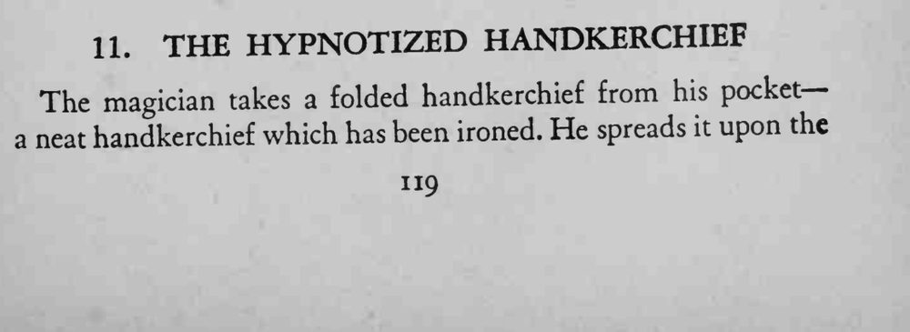
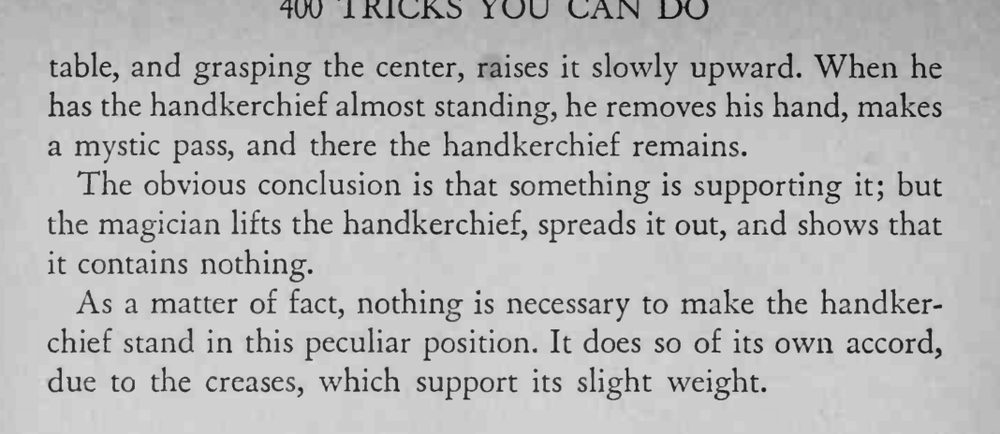

魔术师把一块熨好的手帕摊在桌上，捏住中心慢慢提起，松手后手帕竟立住不倒，检查手帕里什么也没有。
手帕上的折痕就是支撑，熨烫时折出的棱线要保留。


The magician takes a folded handkerchief from his pocket— neat handkerchief which has been ironed. He spreads it upon the table, and grasping the center, raises it slowly upward. When he has the handkerchief almost standing, he removes his hand, makes a mystic pass, and there the handkerchief remains. The obvious conclusion is that something is supporting it; but the magician lifts the handkerchief, spreads it out, and shows that it contains nothing. As a matter of fact, nothing is necessary to make the handkerchief stand in this peculiar position. It does so of its own accord, due to the creases, which support its slight weight.